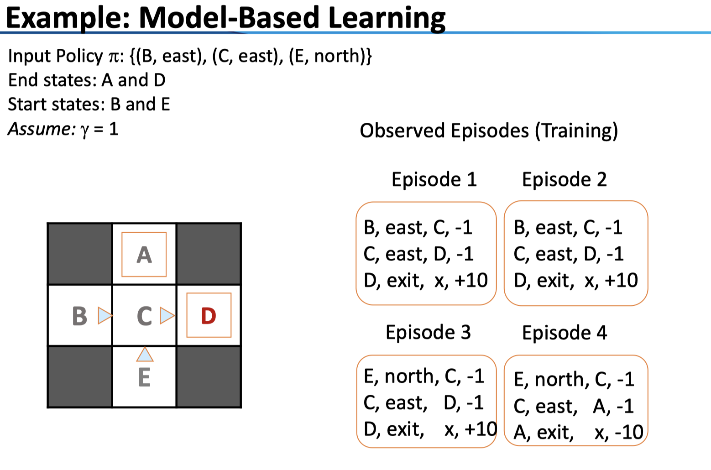
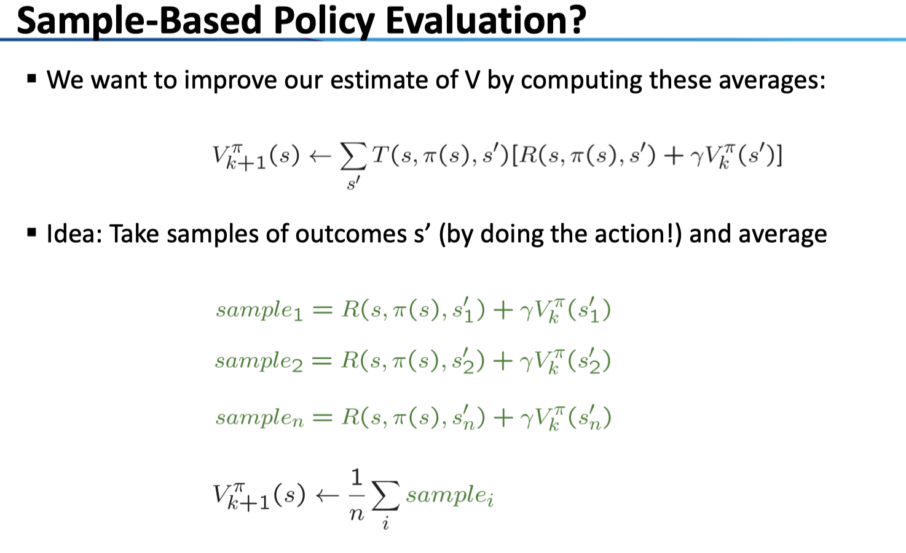
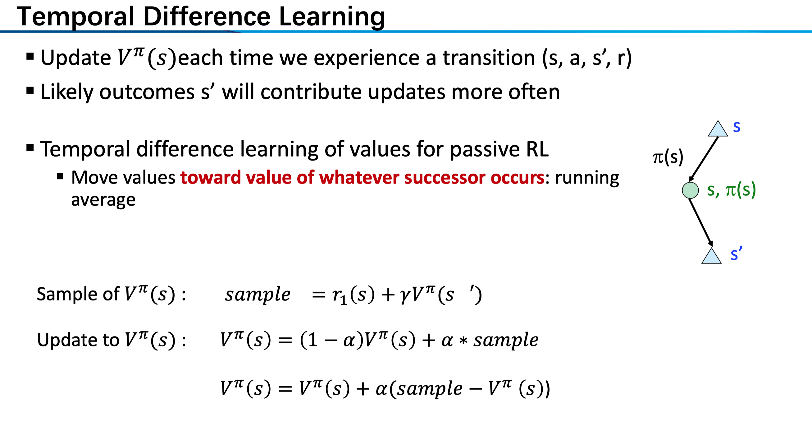
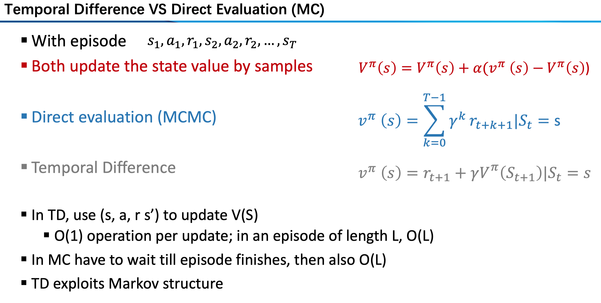
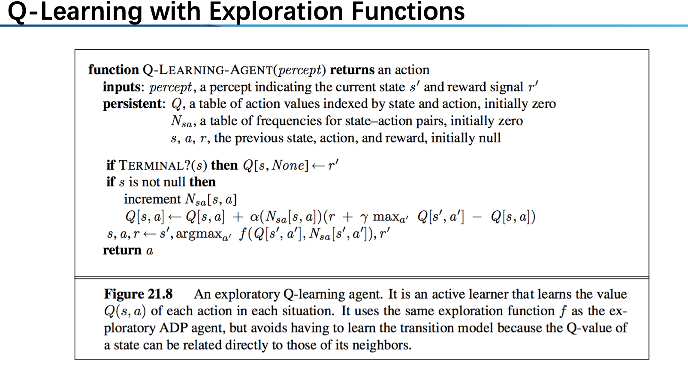

在 MDP 中，我们给出了 model（即转移 T 和奖励 R 的具体形式），然而，这种情况显然是理想的，要解决现实中的问题，我们一般不能得到 model，因此，就进入到了这个专题——强化学习 RL。
和 MDP 中的概念类似，这里有状态集 S，动作集 A，对于我们的每个 \((s,a)\) 环境会给出一个回报 r ，并转移到新的状态 \(s'\)，注意，我们并不知道 R 和 T 的具体形式，只能获得这一系列的 \(s,a,r,s'\) 序列，基于此，我们要训练出决策 \(\pi(s)\)。
Model-based RL
在 model-baesd 中，我们仍未放弃模型，相较于 MDP，我们通过数据训练出一个估计的模型，并利用这个模型使用 MDP 的方法来学习，例如 value iteration, policy iteration 等。
具体来说，我们的观测是一系列的 episode，即从一个初始状态出发，经过一些动作，最终到达了一个终止状态，这一幕就结束了。

基于这些 episodes，我们可以用极大似然的方法近似估计 Transition model, Reward model，再用 MDP 方法求解。
Model-free RL
而在 model-free 中，我们则改用了另一种策略——事实上，在 model-based 中，我们重新通过模型来进行学习，可以说是浪费了序列的一些信息；另一方面，这种方法可能需要大量的观测，对于数据的要求较高。
教材和讲课的方式是按照 passive, active 的区分来讲的，passive 的意思是说，我们固定了一个策略，在这个策略下生成观测，最终计算出结果；而在 active 中，我们不固定策略，而是在搜索过程中不断调整更新，目的是为了找到最优的策略。参照 MDP 里面的内容，可以认为 active 是一个完整的求解问题的过程，而在 passive，我们仅做了在 policy iteration 中固定策略，更新值的操作。
Passive RL
当然，两者还有有一定的区别的，从课程内容来看，在 passive 中，我们更多使用的是 V，而在 active 中我们一般使用 Q 值迭代。具体来说，有 MC 和 TD 两种 passive 算法。
Monte Carlo MC：即 Direct evaulation
\[
V^\pi (s)=E_\pi[\sum_{k=1}^T \gamma^kR_{t+k+1}|S_t=s)
\]
在这里，我们对于每一个 episode 中的 state，以衰减因子\(\gamma\) 计算其期望的 reward（直到 episode 结束）具体计算的时候，上述的求期望即求和平均（对于一个 episode 中出现多次的状态来说，可以只使用第一个出现的，也可以重复使用）。
或者说，我们通过每一个出现的样本值更新了 policy value（我们的样本生成所采用的 policy）
\[
V^\pi(s)=(1-\eta)V^\pi(s)+\eta v_i^\pi(s), \eta={1\over N'}
\]
（我们在这里给出了一个等价的表述，但事实上计算的时候不是照此计算的，这里是为了和后面的 TD 统一起来。）这里计算了在给定一个固定的 policy 下的价值迭代，我们可以根据得到的结果更新策略生成数据，再次进行上述 MC。下面给出了这种「policy evaluation」的思想。

这是一个比较直观的想法，最终的结果是对于每一个状态得到了期望的值。然而，问题在于：1. states are learned separately, 2. waste information about state connections.
比较在有 model ，即 MDP 下的公式
\[
V_{k+1}^\pi(s)\leftarrow \sum_{s'}T(s,\pi(s),s')[R(s,\pi(s),s')+\gamma V_k^\pi(s')]
\]
这里 take samples 的想法是比较容易理解的。
那么，我们如何在 model-free 下利用到 model 的信息呢？
Temporal Difference TD Learning:
\[
V^\pi(s)\leftarrow V(s)+\alpha(N(s))(R+\gamma V(s')-V(s))\\\tag{1}
\]
对于后项来说，我们计算得新的 value，减去原来的 value 得到 difference，再以学习率 \(\alpha\) 更新原来的 V。注意这里的学习率可以是上面的随着 N 递减的函数，也可以是一个 fixed 的函数。

最后，来比较一个这两种方式：对于一个长度为 L 的 episode 来说，两者的时间复杂度都是 \(O(L)\)。而对于 TD 来说，它利用了 Markov 的结构；对于 MC 来说，它必须等到整个 episode 结束之后才能进行学习，而 TD 则随着 episode 的延伸进行学习，因此是 online 的。

Active RL
在主动学习中，我们需要学习策略，也正因于此上述对于 V 进行学习的方法就比较低效了，所以我们一般使用 Q-Learing 。回忆在 MDP 中我们基于模型的公式：
\[
Q_{k+1}(s,a)\leftarrow \sum_{s'}T(s,a,s')[R(s,a,s')+\gamma\max_{a'}Q_k(s',a')]
\]
在 model-free 中我们可基于 TD 采用以下公式迭代：
\[
Q(s,a)\leftarrow (1-\alpha)Q(s,a) +\alpha [R(s,a,s')+\gamma \max_{a'}Q(s',a')]\\\tag{2}
\]
可以看到，和在 passive 下的 TD value 迭代（1）思想上是一致的：都是基于生成一个 sample 以学习率 \(\alpha\) 进行学习。不同之处在于，之前我们对于值直接进行操作不会涉及到策略的选择问题，而在 Q-Learning 中，我们要用 \(s'\) 的值来更新 Q-state=(s,a) ，我们很自然得进行了取 max 操作。
我们可以对所有 Q 状态初始化为 0，接着开始迭代，然而这样会出现一个问题：一旦 agent 找到了一条路径，祂会始终选择这条路径进行决策，从而生成的 episode 失去了一定的随机性——也就是说，我们陷入了局部最优。
Exploration v.s. Exploitation
也就是说，我们除了 expoit 原有的信息，也要保证一定的 exploration。为此，可以的策略有多种：例如：1. 每次行动除了按照 policy extraction 的结果之外以一定的概率随机行动（\(\epsilon-greedy\) ，随机概率随时间减小）；2. 我们不是基于 Q 值 extract 而是使用函数 f 形成策略，如 \(f(u,n)=u+{k\over n}\) ，其中的 u 是我们的 Q 值而 n 为这一策略的次数，直观来解释，我们倾向于采取次数较少（或全新）的 action。

Approximate Q-Learning
有时候，我们并不需要用 state 来描述整个状态空间（Pacman 的例子，1. 状态空间过大；2. 很多状态相似），我们可以提取几个 feature 来 represent 这个状态。——一种降维的思想。
\[
Q(s,a)=w_1f_1(s,a)+...+w_nf_n(s,a)\\
\]
\[
transition = (x,a,r,s')\\
difference = [r+\gamma\max_{a'}Q(s',a')-Q(s,a)]\\
Q(s,a)\leftarrow Q(s,a)+\alpha [difference]\\
w_i\leftarrow w_i \alpha [difference]f_i(s,a)
\]
注意到，我们对于每一个 sample，用它来更新了各特征的 weight；直观来看，若一个 policy 不够好，那么 difference 可能是负数，那么在这种情况下我们就会把在这里表现较为突出的 feature（\(f_i(s,a)\) 较大）的权重 \(w_i\) 进行缩减。